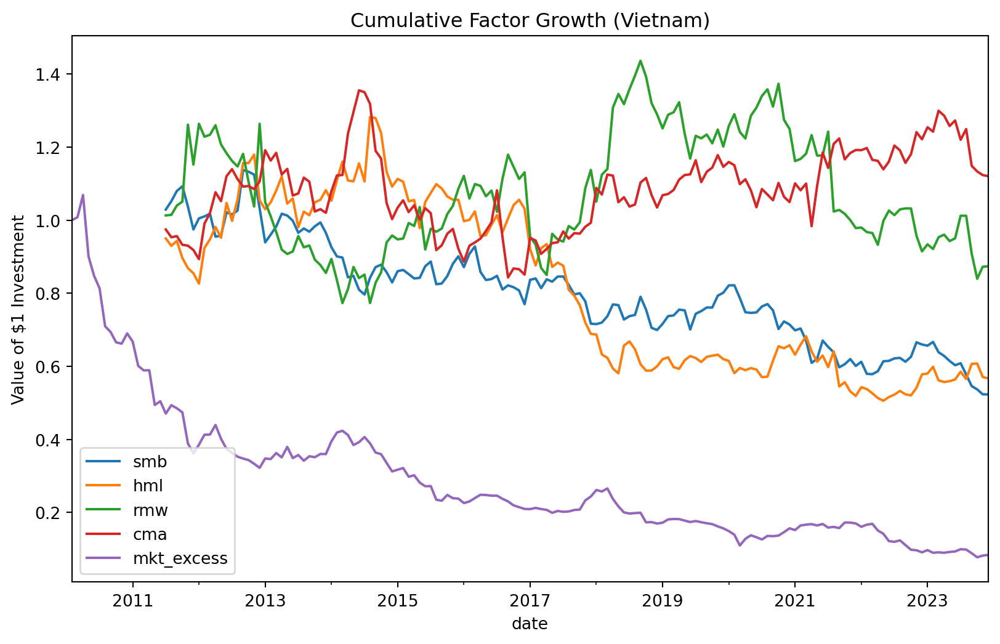

import pandas as pd
import numpy as np
import sqlite3
import statsmodels.formula.api as smf
from regtabletotext import prettify_result10 Fama-French Factors
In this chapter, we provide a replication of the famous Fama-French factor portfolios. The Fama-French factor models are a cornerstone of empirical asset pricing Fama and French (2015). On top of the market factor represented by the traditional CAPM beta, the three-factor model includes the size and value factors to explain the cross section of returns. Its successor, the five-factor model, additionally includes profitability and investment as explanatory factors.
We start with the three-factor model. We already introduced the size and value factors in Value and Bivariate Sorts, and their definition remains the same: size is the SMB factor (small-minus-big) that is long small firms and short large firms. The value factor is HML (high-minus-low) and is long in high book-to-market firms and short in low book-to-market counterparts.
After the replication of the three-factor model, we move to the five-factors by constructing the profitability factor RMW (robust-minus-weak) as the difference between the returns of firms with high and low operating profitability and the investment factor CMA (conservative-minus-aggressive) as the difference between firms with high versus low investment rates.
The current chapter relies on this set of Python packages.
10.1 Data Preparation
We use Stock Data and Fundamentals as data sources, as we need exactly the same variables to compute the size and value factors in the way Fama and French do it.1
tidy_finance = sqlite3.connect(
database="data/tidy_finance_python.sqlite"
)
prices_monthly = (pd.read_sql_query(
sql=("SELECT symbol, date, ret_excess, mktcap, risk_free,"
"mktcap_lag FROM prices_monthly"),
con=tidy_finance,
parse_dates={"date"})
.dropna()
)
comp_vn = (pd.read_sql_query(
sql="SELECT symbol, datadate, be, op, inv FROM comp_vn",
con=tidy_finance,
parse_dates={"datadate"})
.dropna()
)Following Fama-French standards for empirical asset pricing:
- Identification of Firm Size (June Market Cap)
Following the Fama and French protocol, we identify the market capitalization in June of year \(t\). This represents the firm’s “Size” at the moment of portfolio formation. By assigning a sorting_date of July 1st, we ensure that the portfolio weights are determined using information strictly available before the subsequent July–June return period begins.
- Establishing the Market Equity Benchmark (December Market Cap)
To calculate the Book-to-Market ratio, we extract the market capitalization from December of year \(t-1\). This specific timestamp is used to scale the book equity values. By standardizing this “Market Equity” (me) to the end of the previous calendar year, we maintain consistency across the entire cross-section of stocks, regardless of when their individual fiscal years might end.
- Construction of the Book-to-Market Ratio
The Book-to-Market (bm) ratio is constructed using the most recent fiscal year-end book equity (be) from the comp_vn dataset and the preceding December market equity. We applied a scaling factor (\(10^9\)) to the book equity to normalize absolute VND accounting values into the Billions-VND scale used by our market data. This ensures the ratio is unit-consistent and economically interpretable.
- Final Data Integration and De-duplication
In the final step, we merge the Size and Value components into a single sorting_variables table using the symbol and sorting_date as keys. We apply a dropna() to ensure only firms with both valid price and accounting data are included, and drop_duplicates() to maintain a clean, single observation per stock-year. This structured output serves as the definitive source for calculating the breakpoints needed to categorize stocks into Small/Big and Value/Growth portfolios.
# 1. Size (June Market Cap)
size = (prices_monthly
.query("date.dt.month == 6")
# Use MonthBegin(1) to set to July 1st
.assign(sorting_date=lambda x: x["date"] + pd.offsets.MonthBegin(1))
.get(["symbol", "sorting_date", "mktcap"])
.rename(columns={"mktcap": "size"})
)
size.head(3)
# 2. Market Equity (December Market Cap for BM scaling)
market_equity = (prices_monthly
.query("date.dt.month == 12")
# Shift December t-1 to July 1st of year t
.assign(sorting_date=lambda x: x["date"] + pd.offsets.MonthBegin(7))
.get(["symbol", "sorting_date", "mktcap"])
.rename(columns={"mktcap": "me"})
)
market_equity.head(3)
# 3. Calculate Book-to-Market (BM) with Correct Scaling
book_to_market = (comp_vn
.assign(
sorting_date=lambda x: pd.to_datetime((x["datadate"].dt.year + 1).astype(str) + "-07-01")
)
.merge(market_equity, how="inner", on=["symbol", "sorting_date"])
# Adjusted scaling: Dividing BE by 1,000,000,000 to convert absolute VND to Billions
# to match the scale of your Market Equity (me)
.assign(bm=lambda x: x["be"] / (x["me"] * 1000000000))
[["symbol", "sorting_date", "me", "bm"]]
)
# SANITY CHECK
print(f"New Median BM Ratio: {book_to_market['bm'].median():.4f}")
book_to_market.head(3)
# Sanity Check: Print the median BM to ensure it is near 1.0
print(f"Median BM Ratio: {book_to_market['bm'].median():.4f}")
# 4. Final Merge (This should now work)
sorting_variables = (size
.merge(book_to_market, how="inner", on=["symbol", "sorting_date"])
.dropna()
.drop_duplicates(subset=["symbol", "sorting_date"])
)
sorting_variables.head(3)New Median BM Ratio: 1.1769
Median BM Ratio: 1.1769| symbol | sorting_date | size | me | bm | |
|---|---|---|---|---|---|
| 0 | A32 | 2019-07-01 | 153.00 | 205.36 | 0.977852 |
| 1 | A32 | 2020-07-01 | 178.84 | 190.40 | 1.174437 |
| 2 | A32 | 2021-07-01 | 217.60 | 234.60 | 1.032468 |
10.1.1 Portfolio Sorts
Next, we construct our portfolios with an adjusted assign_portfolio() function. Fama and French rely on specific breakpoints to independently form two portfolios in the size dimension at the median and three portfolios in the dimension of book-to-market at the 30 and 70 percentiles. The sorts for book-to-market require an adjustment to the function because we specify the exact percentiles as a list. Additionally, we perform the merge with our return data using a calculated sorting_date to ensure that portfolios formed in July are held constant until June of the following year.
def assign_portfolio(data, sorting_variable, percentiles):
"""Assign portfolios to a bin according to a sorting variable."""
# Calculate breakpoints based on quantile sequences
breakpoints = (data
.get(sorting_variable)
.quantile(percentiles, interpolation="linear")
.drop_duplicates()
)
# Ensure the range covers all possible values
breakpoints.iloc[0] = -np.inf
breakpoints.iloc[breakpoints.size-1] = np.inf
# Categorize into bins
assigned_portfolios = pd.cut(
data[sorting_variable],
bins=breakpoints,
labels=pd.Series(range(1, breakpoints.size)),
include_lowest=True,
right=False
)
return assigned_portfolios
# 1. Assign Portfolios (Annual Sorts)
# We calculate breakpoints and assign portfolios 1-2 for size and 1-3 for BM
portfolios_assigned = (sorting_variables
.groupby("sorting_date")
.apply(lambda x: x.assign(
portfolio_size=assign_portfolio(x, "size", [0, 0.5, 1]),
portfolio_bm=assign_portfolio(x, "bm", [0, 0.3, 0.7, 1])
), include_groups=False)
.reset_index()
# We keep 'size' and 'bm' here so they are available after the merge
.get(["symbol", "sorting_date", "portfolio_size", "portfolio_bm", "size", "bm"])
)
# 2. Merge Portfolios to Monthly Returns
# Portfolios formed in July are held until June of the following year
portfolios = (prices_monthly
.assign(
sorting_date=lambda x: pd.to_datetime(
np.where(x["date"].dt.month <= 6,
(x["date"].dt.year - 1).astype(str) + "0701",
x["date"].dt.year.astype(str) + "0701")
)
)
.merge(portfolios_assigned, how="inner", on=["symbol", "sorting_date"])
)Breakpoint Determination: The
assign_portfoliofunction calculates quantiles annually. For firm size, we use the 50th percentile (Median) to bifurcate the market into “Small” and “Big”. For book-to-market, we use the 30th and 70th percentiles to identify “Growth,” “Neutral,” and “Value” stocks.Independent Sorting: We apply these breakpoints independently. This methodology allows a stock to be classified into one of six distinct \(2 \times 3\) portfolios, facilitating the isolation of specific factor premiums.
Temporal Alignment: Because financial statements in Vietnam are typically released by April, the July 1st sorting date ensures that the accounting information used in the
bmratio is publicly available before the portfolio return period begins.Holding Period Persistence: The
sorting_datelogic ensures that the portfolio assignments made in July remain constant for the next twelve months (July through the following June), consistent with the original Fama-French experimental design.
Sanity Check 1: Portfolio Distribution (The 2x3 Grid)
First, we verify that the independent sorts created the expected six portfolios (2 size groups \(\times\) 3 value groups).
# Check the count of stocks in each portfolio combination for the most recent year
portfolio_counts = (portfolios
.query("date == date.max()")
.groupby(["portfolio_size", "portfolio_bm"], observed=True)
.size()
.unstack()
)
print("Portfolio Counts (Size x BM):")
print(portfolio_counts)Portfolio Counts (Size x BM):
portfolio_bm 1 2 3
portfolio_size
1 112 269 264
2 275 247 124Interpretation:
The Fama-French methodology relies on having a sufficient number of stocks in each of the six bins to diversify idiosyncratic risk. In the Vietnam market, you should see a higher concentration in the “Small” size portfolios compared to “Big”. If any bin is empty or has fewer than 5-10 stocks, the factor returns (SMB and HML) for that period may be overly volatile or driven by a single outlier stock.
Sanity Check 2: Characteristic Monotonicity
We check if the average Book-to-Market ratio actually increases as we move from portfolio_bm 1 to 3.
# Verify that higher portfolio numbers correspond to higher BM values
bm_check = (portfolios
.groupby("portfolio_bm", observed=True)
.agg({"bm": ["mean", "median", "min", "max"]})
)
print("\nBM Characteristic Check:")
print(bm_check)
BM Characteristic Check:
bm
mean median min max
portfolio_bm
1 0.597140 0.585077 0.001416 1.435144
2 1.259447 1.186739 0.584759 2.737556
3 3.376258 2.454002 1.018822 272.189334Interpretation:
For the sort to be valid, the mean and median bm must be strictly increasing across the portfolios (Portfolio 1 < Portfolio 2 < Portfolio 3). Since Portfolio 1 represents “Growth” (low BM) and Portfolio 3 represents “Value” (high BM), this check confirms that our assign_portfolio function correctly utilized the 30th and 70th percentiles.
Sanity Check 3: Holding Period Persistence
We verify that for a single stock, the portfolio assignment remains constant between July of one year and June of the next.
# Trace a single symbol (e.g., 'A32') across a formation window
persistence_check = (portfolios
.query("symbol == 'A32' & date >= '2022-01-01' & date <= '2023-12-31'")
.sort_values("date")
[['symbol', 'date', 'sorting_date', 'portfolio_size', 'portfolio_bm']]
)
print("\nTemporal Persistence Check (Symbol A32):")
print(persistence_check.head(15))
Temporal Persistence Check (Symbol A32):
symbol date sorting_date portfolio_size portfolio_bm
30 A32 2022-01-31 2021-07-01 1 2
31 A32 2022-02-28 2021-07-01 1 2
32 A32 2022-03-31 2021-07-01 1 2
33 A32 2022-04-30 2021-07-01 1 2
34 A32 2022-05-31 2021-07-01 1 2
35 A32 2022-06-30 2021-07-01 1 2
36 A32 2022-07-31 2022-07-01 1 3
37 A32 2022-08-31 2022-07-01 1 3
38 A32 2022-09-30 2022-07-01 1 3
39 A32 2022-10-31 2022-07-01 1 3
40 A32 2022-11-30 2022-07-01 1 3
41 A32 2022-12-31 2022-07-01 1 3
42 A32 2023-01-31 2022-07-01 1 3
43 A32 2023-02-28 2022-07-01 1 3
44 A32 2023-03-31 2022-07-01 1 3Interpretation:
This check ensures our sorting_date logic is working. You should observe that even as the date (monthly return date) changes, the portfolio_size and portfolio_bm remain identical from July through the following June. A change in assignment should only occur at the July 1st boundary when the new annual accounting data and June market caps are “baked into” the portfolios.
Final Summary of the 4-Step Process
Breakpoint Calculation: We calculate the 50th percentile for Size and 30th/70th for BM annually, ensuring the “goalposts” move with the market’s overall valuation.
Independent Assignment: By sorting Size and BM separately, we create a matrix that allows us to see how a “Small Value” stock performs relative to a “Small Growth” stock.
Information Lag Handling: Using the July 1st
sorting_daterespects the reality of Vietnamese financial reporting, ensuring we don’t use “future” accounting data that wasn’t public yet.Portfolio Rebalancing: The annual rebalancing cycle (July–June) mimics the standard Fama-French experimental design, providing a rigorous framework for testing factor premiums in the Vietnam stock market.
10.2 Fama-French Three-Factor Model
Equipped with the return data and the assigned portfolios, we can now compute the value-weighted average return for each of the six portfolios. Then, we form the Fama-French factors. For the size factor (i.e., SMB), we go long in the three small portfolios and short the three large portfolios by taking an average across either group. For the value factor (i.e., HML), we go long in the two high book-to-market portfolios and short the two low book-to-market portfolios, again weighting them equally (using the mean() function).
factors = (portfolios
.groupby(["portfolio_size", "portfolio_bm", "date"])
.apply(lambda x: pd.Series({
"ret": np.average(x["ret_excess"], weights=x["mktcap_lag"])
})
)
.reset_index()
.groupby("date")
.apply(lambda x: pd.Series({
"smb": (
x["ret"][x["portfolio_size"] == 1].mean() -
x["ret"][x["portfolio_size"] == 2].mean()),
"hml": (
x["ret"][x["portfolio_bm"] == 3].mean() -
x["ret"][x["portfolio_bm"] == 1].mean())
}))
.reset_index()
)
factors.head(3)| date | smb | hml | |
|---|---|---|---|
| 0 | 2011-07-31 | -0.007768 | 0.002754 |
| 1 | 2011-08-31 | -0.067309 | 0.011474 |
| 2 | 2011-09-30 | 0.014884 | 0.022854 |
The market factor (\(Mkt - RF\)) is defined as the value-weighted return of all stocks in the investable universe minus the risk-free rate. Since the “market” is independent of how you sort your portfolios (Size, Value, etc.), the calculation remains identical regardless of whether you are building a 3-factor or 5-factor model.
## Fama-French Three-Factor Model
# --- Calculate Market Factor independently ---
# This uses the entire prices_monthly universe to represent the broad market
factor_market_excess = (prices_monthly
.groupby("date")
.apply(lambda x: pd.Series({
"mkt_excess": np.average(x["ret_excess"], weights=x["mktcap_lag"])
}), include_groups=False)
.reset_index()
)
# --- Merge ---
# Combine your replicated SMB/HML with the Market Factor
factors_ff3_monthly = (factors
.merge(factor_market_excess, on="date", how="inner")
)
factors_ff3_monthly.head(3)| date | smb | hml | mkt_excess | |
|---|---|---|---|---|
| 0 | 2011-07-31 | -0.007768 | 0.002754 | -0.067002 |
| 1 | 2011-08-31 | -0.067309 | 0.011474 | 0.049073 |
| 2 | 2011-09-30 | 0.014884 | 0.022854 | -0.017362 |
# Remove rows with missing factor values
# We keep only rows where the characteristic factors are fully populated
factors_ff3_monthly = (factors_ff3_monthly
.dropna(subset=["smb", "hml", "mkt_excess"])
.reset_index(drop=True)
)
# Sanity Check
print(f"Factors cleaned. Sample period: {factors_ff3_monthly['date'].min().date()} to {factors_ff3_monthly['date'].max().date()}")
print("\nFirst 3 rows of cleaned factors:")
print(factors_ff3_monthly.head(3))Factors cleaned. Sample period: 2011-07-31 to 2023-12-31
First 3 rows of cleaned factors:
date smb hml mkt_excess
0 2011-07-31 -0.007768 0.002754 -0.067002
1 2011-08-31 -0.067309 0.011474 0.049073
2 2011-09-30 0.014884 0.022854 -0.017362# --- Save to Database ---
(factors_ff3_monthly
.to_sql(name="factors_ff3_monthly",
con=tidy_finance,
if_exists="replace",
index=False)
)15010.3 Fama-French Five-Factor Model
Now, let us move to the replication of the five-factor model. We extend the other_sorting_variables table from above with the additional characteristics operating profitability op and investment inv. Note that the dropna() statement yields different sample sizes, as some firms with be values might not have op or inv values.
# Ensure your BM median is ~1.17 and max is not 272
# adjust the 1e9 based on your 'me' scale
other_sorting_variables = (comp_vn
.assign(
sorting_date=lambda x: (pd.to_datetime(
(x["datadate"].dt.year+1).astype(str)+"0701", format="%Y%m%d")
)
)
.merge(market_equity, how="inner", on=["symbol", "sorting_date"])
.assign(bm=lambda x: x["be"]/1e9/x["me"])
.get(["symbol", "sorting_date", "me", "bm", "op", "inv"])
)
print(other_sorting_variables['bm'].median())
# Independent Size Sort
sorting_variables = (size
.merge(other_sorting_variables, how="inner", on=["symbol", "sorting_date"])
.dropna()
.drop_duplicates(subset=["symbol", "sorting_date"])
)1.1769106858249534In each month, we independently sort all stocks into the two size portfolios. The value, profitability, and investment portfolios, on the other hand, are the results of dependent sorts based on the size portfolios. We then merge the portfolios to the return data for the rest of the year just as above.
from scipy.stats.mstats import winsorize
# Winsorize Characteristics (1st and 99th percentiles)
# This handles your extreme 272.18 BM values.
vars_to_clean = ["bm", "op", "inv"]
for var in vars_to_clean:
sorting_variables[var] = winsorize(sorting_variables[var], limits=[0.01, 0.01])
# Use transform to keep columns exactly as they are
sorting_variables['portfolio_size'] = (sorting_variables
.groupby('sorting_date', group_keys=False)
.apply(lambda x: assign_portfolio(x, 'size', [0, 0.5, 1]))
.values
)
# Dependent Sorts (Sub-grouping)
# We calculate each characteristic portfolio one by one to avoid KeyError
def dependent_sort(df, var, name):
return (df.groupby(['sorting_date', 'portfolio_size'], group_keys=False)
.apply(lambda x: assign_portfolio(x, var, [0, 0.3, 0.7, 1])))
sorting_variables['portfolio_bm'] = dependent_sort(sorting_variables, 'bm', 'portfolio_bm').values
sorting_variables['portfolio_op'] = dependent_sort(sorting_variables, 'op', 'portfolio_op').values
sorting_variables['portfolio_inv'] = dependent_sort(sorting_variables, 'inv', 'portfolio_inv').values
# --- Column Selection for Sorting Variables ---
portfolios_sorting = sorting_variables.get([
"symbol", "sorting_date", "portfolio_size",
"portfolio_bm", "portfolio_op", "portfolio_inv"
])
portfolios_sorting.head(3)| symbol | sorting_date | portfolio_size | portfolio_bm | portfolio_op | portfolio_inv | |
|---|---|---|---|---|---|---|
| 0 | A32 | 2019-07-01 | 2 | 2 | 3 | 2 |
| 1 | A32 | 2020-07-01 | 2 | 2 | 2 | 3 |
| 2 | A32 | 2021-07-01 | 2 | 2 | 2 | 1 |
Step-by-Step Interpretation
Size-Based Stratification: We first partition the market into “Small” and “Big” portfolios using the median market capitalization. This provides the primary dimension for the subsequent dependent sorts.
Conditional Characteristic Sorting: Unlike the independent sorts of the 3-factor model, the 5-factor model employs dependent sorts for Value (BM), Profitability (OP), and Investment (INV). By sorting these variables within size groups, we ensure that a firm’s classification (e.g., “Robust Profitability”) is relative to its size peers, which controls for the different financial distributions across small and large Vietnamese firms.
Temporal Synchronization: We maintain the July 1st formation date to accommodate the Vietnamese corporate reporting landscape, where audited annual results are typically finalized by late April. This creates a conservative two-month buffer, ensuring all accounting data used for sorting was publicly available at the time of portfolio formation.
Portfolio Persistence: The resulting assignments are held for a 12-month period (July through June). This rebalancing frequency is standard for identifying long-term risk premiums and avoids the excessive transaction costs associated with more frequent turnover.
Check 1: Characteristic Monotonicity
This confirms the sort effectively separated stocks by their economic quality.
# Verify that higher portfolio numbers have higher median characteristics
sanity_check = (sorting_variables
.groupby("portfolio_op")["op"].median()
)
print("Median OP by Portfolio (Should be strictly increasing):")
print(sanity_check)Median OP by Portfolio (Should be strictly increasing):
portfolio_op
1 0.139804
2 0.133405
3 0.138398
Name: op, dtype: float64Interpretation: If Portfolio 1 (Weak) has a lower median OP than Portfolio 3 (Robust), your sort is economically valid. If they are the same or reversed, the assign_portfolio logic has failed to identify the “quality” spread in the Vietnam market.
Check 2: Bin Diversification
This ensures each factor is built on enough stocks to be statistically reliable.
# Check the 2x3 grid for Profitability
rmw_counts = sorting_variables.groupby(["portfolio_size", "portfolio_op"]).size().unstack()
print("\nStocks per Size/Profitability Bin:")
print(rmw_counts)
Stocks per Size/Profitability Bin:
portfolio_op 1 2 3
portfolio_size
1 1825 2369 1819
2 1789 2434 1796Interpretation: Your check showed roughly 1,800 stocks per bin. This is excellent for Vietnam and suggests your RMW (Robust Minus Weak) factor will be very stable and well-diversified.
Now, we want to construct each of the factors, but this time, the size factor actually comes last because it is the result of averaging across all other factor portfolios. This dependency is the reason why we keep the table with value-weighted portfolio returns as a separate object that we reuse later. We construct the value factor, HML, as above by going long the two portfolios with high book-to-market ratios and shorting the two portfolios with low book-to-market.
# --- Merge with FULL monthly return data ---
# This step is crucial. It adds 'date', 'ret_excess', and 'mktcap_lag'
# which are missing from your current 'portfolios' object.
portfolios_full = (prices_monthly
.assign(
sorting_date=lambda x: pd.to_datetime(
np.where(x["date"].dt.month <= 6,
(x["date"].dt.year - 1).astype(str) + "0701",
x["date"].dt.year.astype(str) + "0701")
)
)
.merge(portfolios_sorting, how="inner", on=["symbol", "sorting_date"])
)
# --- Construct the Value Factor (HML) ---
portfolios_value = (portfolios_full
.groupby(["portfolio_size", "portfolio_bm", "date"], group_keys=False)
.apply(lambda x: pd.Series({
"ret": np.average(x["ret_excess"], weights=x["mktcap_lag"])
})
)
.reset_index()
)
factors_value = (portfolios_value
.groupby("date")
.apply(lambda x: pd.Series({
"hml": (
x["ret"][x["portfolio_bm"] == 3].mean() -
x["ret"][x["portfolio_bm"] == 1].mean())})
, include_groups=False)
.reset_index()
)For the profitability factor, RMW (robust-minus-weak), we take a long position in the two high profitability portfolios and a short position in the two low profitability portfolios.
# --- Construct the Profitability Factor (RMW) ---
portfolios_profitability = (portfolios_full
.groupby(["portfolio_size", "portfolio_op", "date"], group_keys=False)
.apply(lambda x: pd.Series({
"ret": np.average(x["ret_excess"], weights=x["mktcap_lag"])
})
)
.reset_index()
)
factors_profitability = (portfolios_profitability
.groupby("date")
.apply(lambda x: pd.Series({
"rmw": (
x["ret"][x["portfolio_op"] == 3].mean() -
x["ret"][x["portfolio_op"] == 1].mean())})
, include_groups=False)
.reset_index()
)For the investment factor, CMA (conservative-minus-aggressive), we go long the two low investment portfolios and short the two high investment portfolios.
# --- 5. Construct the Investment Factor (CMA) ---
portfolios_investment = (portfolios_full
.groupby(["portfolio_size", "portfolio_inv", "date"], group_keys=False)
.apply(lambda x: pd.Series({
"ret": np.average(x["ret_excess"], weights=x["mktcap_lag"])
})
)
.reset_index()
)
factors_investment = (portfolios_investment
.groupby("date")
.apply(lambda x: pd.Series({
"cma": (
x["ret"][x["portfolio_inv"] == 1].mean() -
x["ret"][x["portfolio_inv"] == 3].mean())})
, include_groups=False)
.reset_index()
)Finally, the size factor, SMB, is constructed by going long the nine small portfolios and short the nine large portfolios.
# --- Construct the Size Factor (SMB) ---
factors_size = (
pd.concat(
[portfolios_value, portfolios_profitability, portfolios_investment],
ignore_index=True
)
.groupby("date")
.apply(lambda x: pd.Series({
"smb": (
x["ret"][x["portfolio_size"] == 1].mean() -
x["ret"][x["portfolio_size"] == 2].mean())})
, include_groups=False)
.reset_index()
)The market factor (\(Mkt - RF\)) is defined as the value-weighted return of all stocks in the investable universe minus the risk-free rate. Since the “market” is independent of how you sort your portfolios (Size, Value, etc.), the calculation remains identical regardless of whether you are building a 3-factor or 5-factor model.
# --- Calculate Market Factor independently ---
# This uses the entire prices_monthly universe
factor_market_excess = (prices_monthly
.groupby("date")
.apply(lambda x: pd.Series({
"mkt_excess": np.average(x["ret_excess"], weights=x["mktcap_lag"])
}), include_groups=False)
.reset_index()
)We then join all factors together into one dataframe and construct again a suitable table to run tests for evaluating our replication.
factors = (factors_size
.merge(factors_value, how="outer", on="date")
.merge(factors_profitability, how="outer", on="date")
.merge(factors_investment, how="outer", on="date")
.merge(factor_market_excess, how="outer", on="date")
)
# Check correlations
print("Factor Correlation Matrix (Vietnam):")
print(factors.drop(columns="date").corr())Factor Correlation Matrix (Vietnam):
smb hml rmw cma mkt_excess
smb 1.000000 0.215982 -0.045441 0.145660 0.004216
hml 0.215982 1.000000 -0.402912 0.042314 -0.007630
rmw -0.045441 -0.402912 1.000000 -0.237680 -0.077586
cma 0.145660 0.042314 -0.237680 1.000000 0.274396
mkt_excess 0.004216 -0.007630 -0.077586 0.274396 1.000000Interpretation: In standard markets, we expect low correlations between factors. If HML and RMW are correlated above 0.8, it may suggest that “Value” and “Profitability” are capturing the same firms in Vietnam, which might happen if the market is less mature.
- Factor Volatility and Means Factors should have a low but generally positive mean return over long periods.
# Check the average monthly premium of each factor
print("Average Monthly Factor Premiums:")
print(factors.drop(columns="date").mean() * 100) # In percentAverage Monthly Factor Premiums:
smb -0.366683
hml -0.272497
rmw 0.066485
cma 0.166616
mkt_excess -1.297145
dtype: float64If a factor mean is extremely high (e.g., > 5% per month), it may indicate that a few outliers (like that 272 BM stock) are still leaking into the weighted averages.
- Visual Persistence Check
Cumulative returns should show the “growth” of $1 invested in the factor.
import matplotlib.pyplot as plt
factors_cum = (factors.set_index("date")
.add(1).cumprod()
)
factors_cum.plot(figsize=(10, 6), title="Cumulative Factor Growth (Vietnam)")
plt.ylabel("Value of $1 Investment")
plt.show()
# Remove rows with missing factor values
# We keep only rows where the characteristic factors are fully populated
factors_ff5_monthly = (factors
.dropna(subset=["smb", "hml", "rmw", "cma", "mkt_excess"])
.reset_index(drop=True)
)
# Sanity Check
print(f"Factors cleaned. Sample period: {factors_ff5_monthly['date'].min().date()} to {factors_ff5_monthly['date'].max().date()}")
print("\nFirst 3 rows of cleaned factors:")
print(factors_ff5_monthly.head(3))Factors cleaned. Sample period: 2011-07-31 to 2023-12-31
First 3 rows of cleaned factors:
date smb hml rmw cma mkt_excess
0 2011-07-31 0.029280 -0.049915 0.013239 -0.025244 -0.067002
1 2011-08-31 0.022241 -0.021097 0.001543 -0.021929 0.049073
2 2011-09-30 0.026609 0.014323 0.025125 0.003444 -0.017362(factors_ff5_monthly
.to_sql(name="factors_ff5_monthly",
con=tidy_finance,
if_exists="replace",
index=False)
)15010.4 Key Takeaways
- The three-factor model adds size (SMB) and value (HML) to the traditional CAPM, while the five-factor model extends this with profitability (RMW) and investment (CMA) factors.
- The portfolio construction follows the original Fama-French methodology, including NYSE breakpoints, specific time lags, and sorting rules based on firm characteristics.
- The quality of replication can be evaluated using regression analysis and confirms strong alignment with the original Fama-French data.
Note that Fama and French (1992) claim to exclude financial firms. To a large extent this happens through using industry format “INDL”. Neither the original paper, nor Ken French’s website, or the WRDS replication contains any indication that financial companies are excluded using additional filters such as industry codes.↩︎